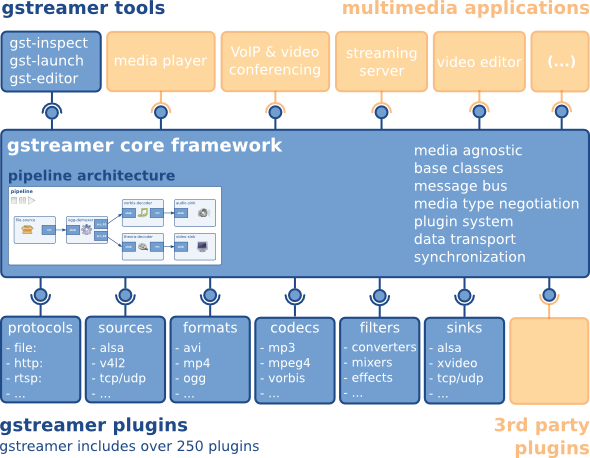
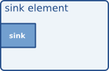

gstreamer-rs: multimedia con Rust
Víctor Jáquez <vjaquez at igalia dot com>
Madrid 2019
Agenda
- ¿Qué es GStreamer?
- Conceptos de GStreamer
- Tutorial básico
- Tutorial de reproducción de audio y vídeo
- Tutorial para crear un elemento
¿Qué es GStreamer?
GStreamer es un framework para desarrollar casi cualquier tipo de aplicaciones multimedia.
- Escrito en C utilizando la biblioteca y el estilo de GLib/GObject
- Su diseño general sigue el patrón de filtros y tuberías
- No sólo procesa flujos de audio y vídeo, sino cualquier tipo flujo
- análisis de las ondas gravitacionales (GstLAL)
- procesamiento de redes neuronales y machine learning

Palabros
- Plugins
- Core
- Base
- Good
- Bad
- Ugly
- Extras
- Elements
- gestión de protocolos
- sources (recepción de flujos)
- formato (parsers, muxers/demuxers, etc.)
- codecs (encoders/decoders)
- filtros (converters, mixers, effects)
- sinks (despliegue de flujos procesados)
Más palabros
- Elements: unidad de procesamiento. Tiene uno o varios pads.
- Pads: componentes de entrada o salida de flujos dentro de un elemento. Negocian la encadenación de elementos y el flujo de datos entre ellos.
- Bin: contenedor de elementos que mantienen un mismo estado interno.
- Pipeline: bin raíz. Tiene un bus.
- Bus: paso de mensajes entre pipeline y aplicación.

Comunicación
- buffers: objetos que pasan los datos del flujo entre elementos. Siempre van de sources a sinks (downstream)
- events: objetos enviados entre elementos o desde la aplicación a los elementos. Pueden ir hacia upstream o downstream.
- messages: objetos publicados por los elementos en el bus del pipeline donde pueden ser atendidos por la aplicación de manera asíncrona (por lo general).
- queries: objetos que representan la solicitud de información a un elemento, ya sea desde la aplicación (de manera síncrona) o entre elementos (upstream o downstream)

Elements


- 
Elements
- Descendientes de GObject → GstElement
- Estados de cada elemento
- NULL: sin recursos adjudicados
- READY: con recursos globales adjudicados, sin flujo abierto
- PAUSED: con flujo abierto, procesamiento mínimo sin mover buffers
- PLAYING: procesando y moviendo buffers
Elements
- Los elementos se vinculan entre sí (linking) formando grafos dirigidos

Bin
- Tipo particular de elemento que contiene a otros elementos y gestiona sus estados

Bus
- Es un mecanismo de paso de mensajes desde los hilos lanzados por los elementos y la aplicación.
- Tipos de mensajes
- Errores, advertencias y notificaciones
- Notificación de End-Of-Stream (EOS)
- Metadatos
- Cambios de estado
- Buffering
- Mensajes especiales de ciertos elementos
- Solicitudes de contexto
Pads
- Las puertas de los elementos para recibir y emitir buffers, queries y events
- Propiedades
- Dirección: source / sink
- Disponibilidad: always / sometimes / on request
- Capacidades (caps): descripción del tipo de flujo el pad emite o recibe
Caps
- Diccionarios de datos (llave/valor) asociados a un tipo MIME
audio/x-raw
format: F32LE
rate: [ 1, 2147483647 ]
channels: [ 1, 256 ]video/x-h264
stream-format: { (string)avc, (string)byte-stream }
alignment: au
profile: { (string)constrained-baseline, … }- La negociación de caps es una operación de intersección de conjuntos
Buffers
- Áreas de memoria que contienen los datos que fluyen a través del pipeline
Events
- Partículas de control que se envían upstream o downstream para notificar a los elementos siguientes sobre el estado del flujo: seek / flush / eos
Rust Bindings
- GStreamer está escrito en C/GObject
- Se crean bindings automáticos con la utilería gir
gir
- gir genera dos capas de bindings
- sys: bindings de bajo nivel FFI (foreign function interface) -- generalmente unsafe
- api: bindings de alto nivel, rustificados, usando sys
ficheros gir
- Ambos modos de generación de bindigins utilizan ficheros gir
- ficheros en formato xml que describen la API en C
- GObject Introspection Repository

ejecutando comando gir
- sys
cargo run --release -- -c YourSysGirFile.toml \
-d ../gir-files -m sys -o the-output-directory-sys- api
cargo run --release -- -c YourGirFile.toml \
-d ../gir-files -o the-output-directory